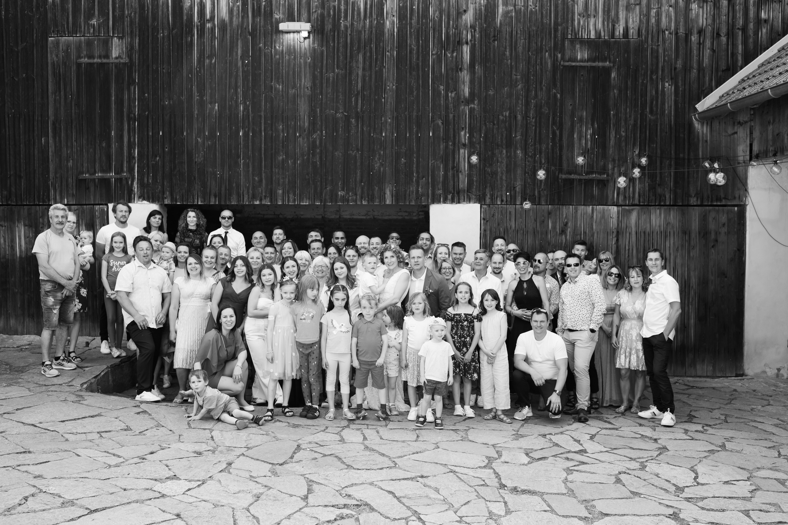
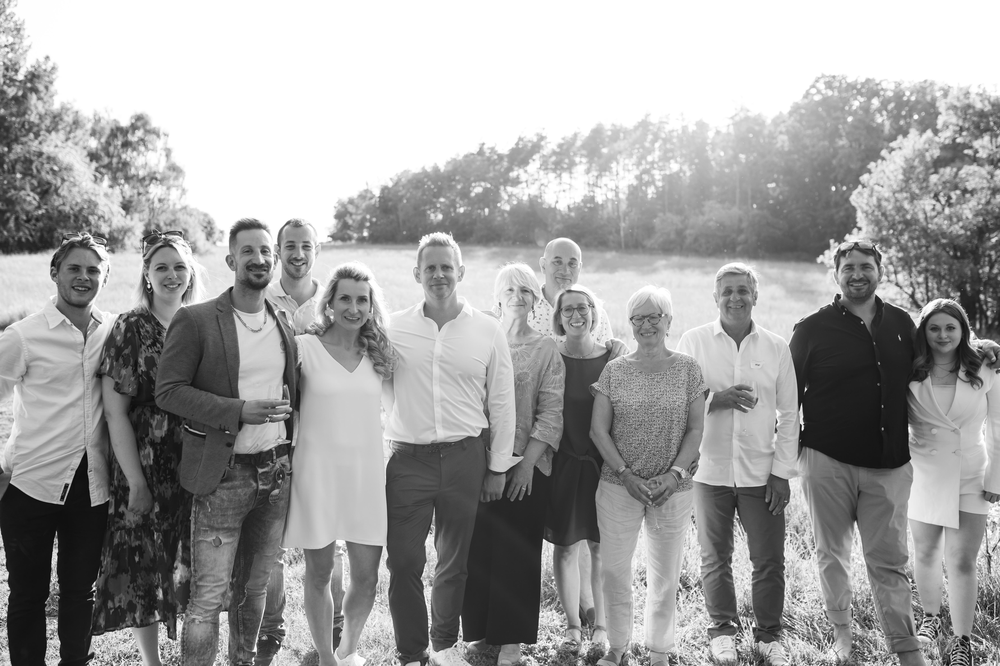
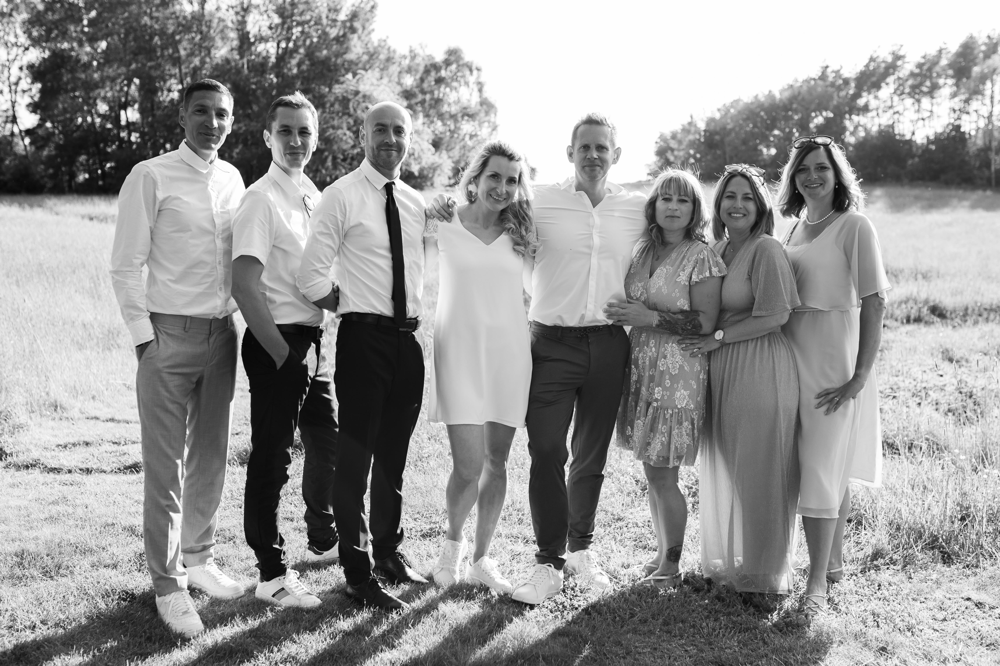
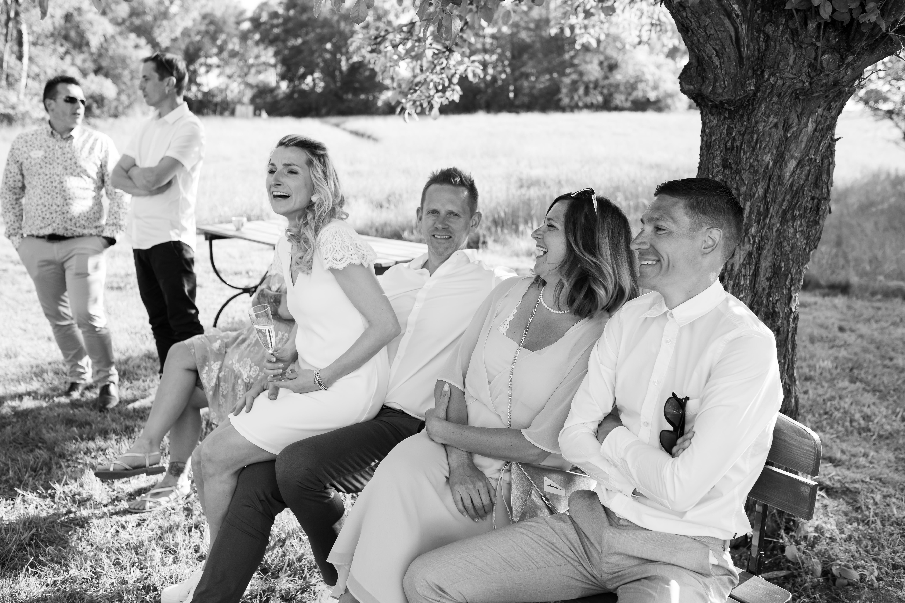
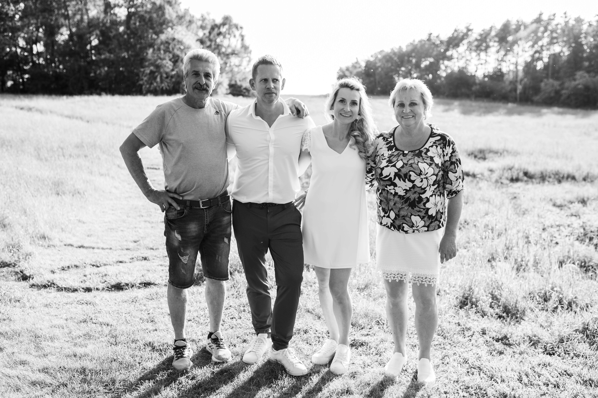
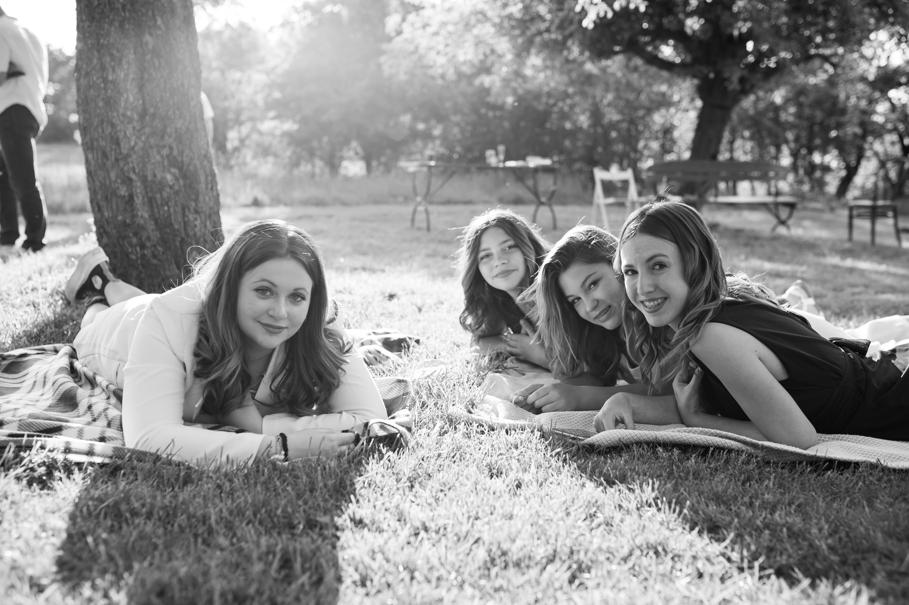
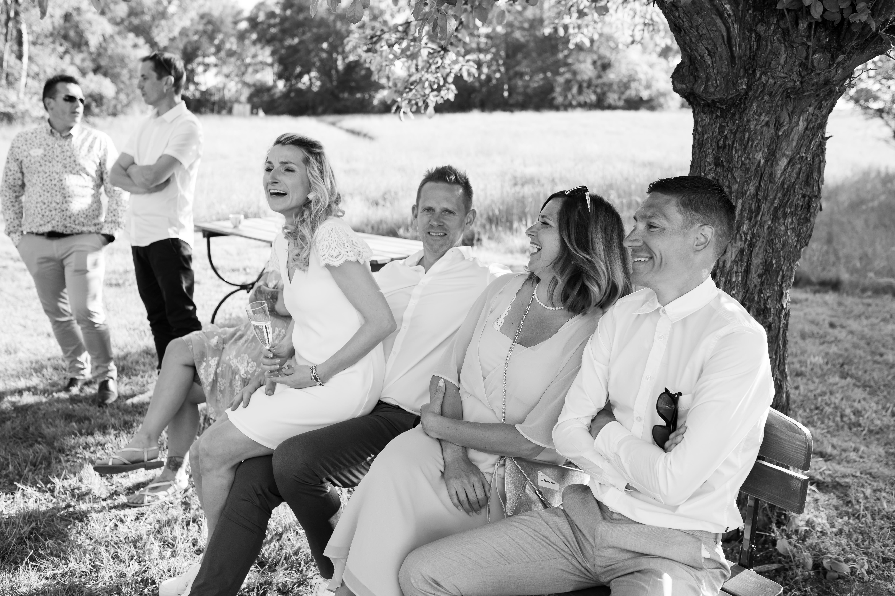
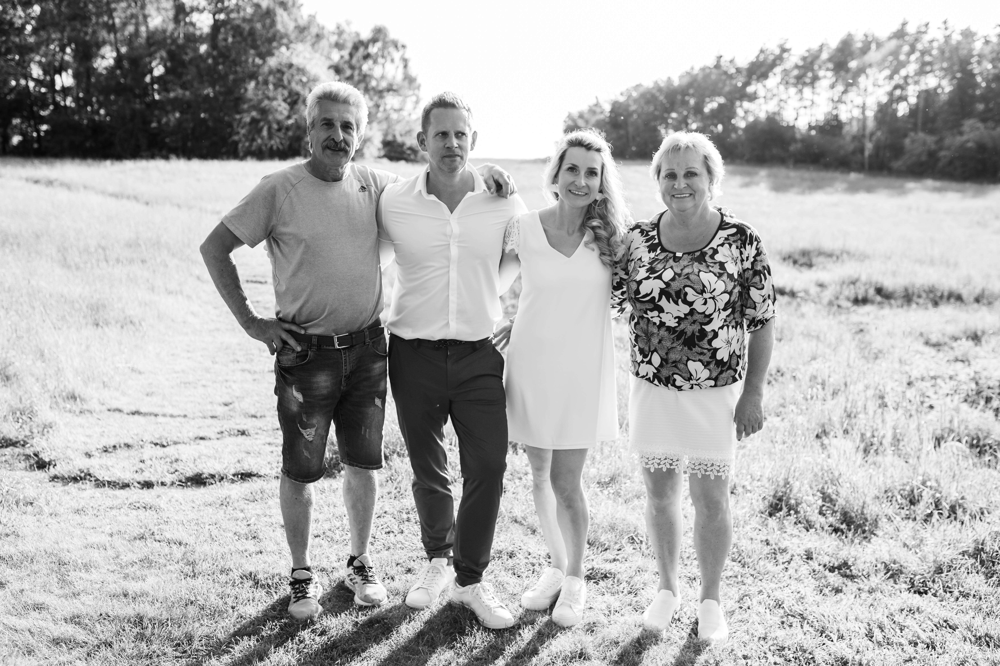
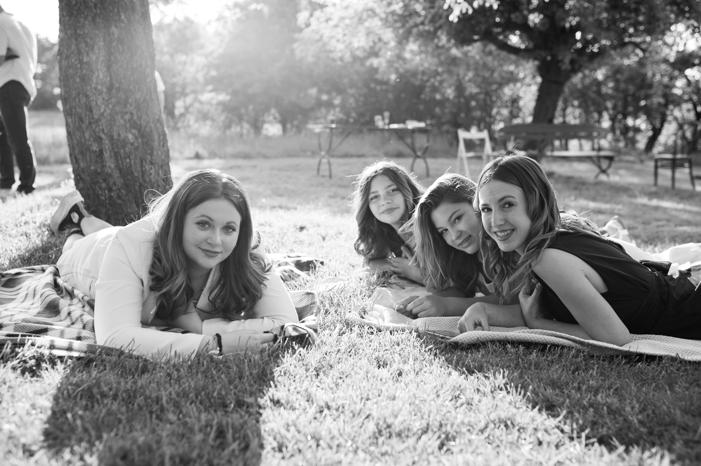

"Moving all over the world but always going back to roots"

I was born 3 weeks before the estimated date of birth....and I think that it was the very last time in my entire life I have arrived somewhere really in advance. Since then I always feel like I have got this "spare time" left and I usually arrive really on time, or five minutes after the deadline.
I am trying to work it out, but hard to change your bad habbits and I do not want my husband to search for a new nick-name, cause today he calls me "Mme Last Minute".
Having an older brother I haveI spent my childhood playing socker and grampring in the trees. I did not want to dress like a girl either.
The final touch to my "boy-like" years added my dad, who took care of my hairstyle in those years.
No surprise that when we entered some shop with my brother, everybody was saying "Hello Boys!".
I have left my parents house at the age for 15, as I started a grammar school and I stayed in the boarding school the whole week. Since then I have never been home again for more than a weekend. I was travelling the Czech Republic and after anywhere I could go with my friends or family.
I lived several month in Manchester and in Brussels and finaly I found my second home 8 years ago in France, Normandy.
I love travelling, chilling with a good glass of wine or prosecco and enjoy delicious food, which is the benefit of living in France. Fortunatelly I like as well sport, so I do not mind to keep moving in order to get rid of consequences of my other hobbies
My family and friends are the fuel of my life, I am always happy to go back to my country, to spent some nice time with my french family or to travel to meet my friends across Europe.
Sharing some pictures of "my people" with you:
   





If you are interested to get in touch or to learn a little bit more about my studies and working career, check the contact details below:
Lucie Hautekeete (Zidkova)
27bis, La Mare Hebèrge
Les Trois Pierres
76430
E-mail: lucicka111@gmail.com
LinkedIn: Linked In Profile Lucie Zidkova
Mobil: +33(0) 663 751 791